Rivest-Shamir-Adleman (1977)
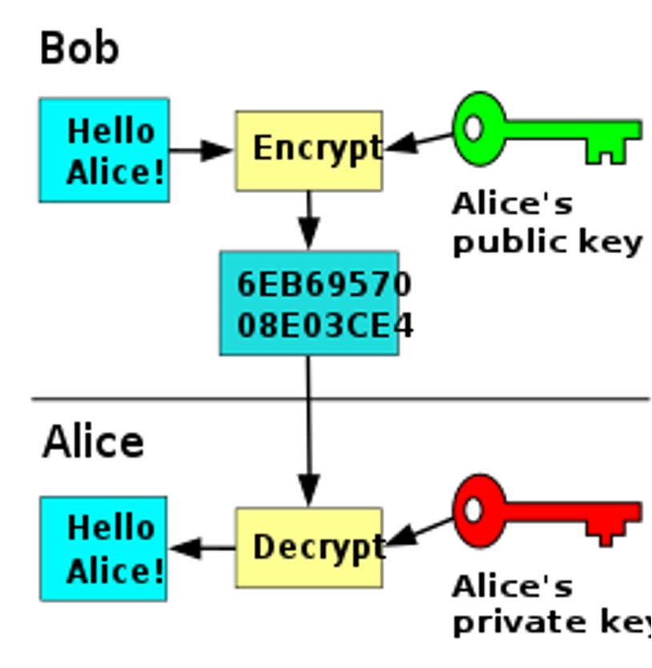
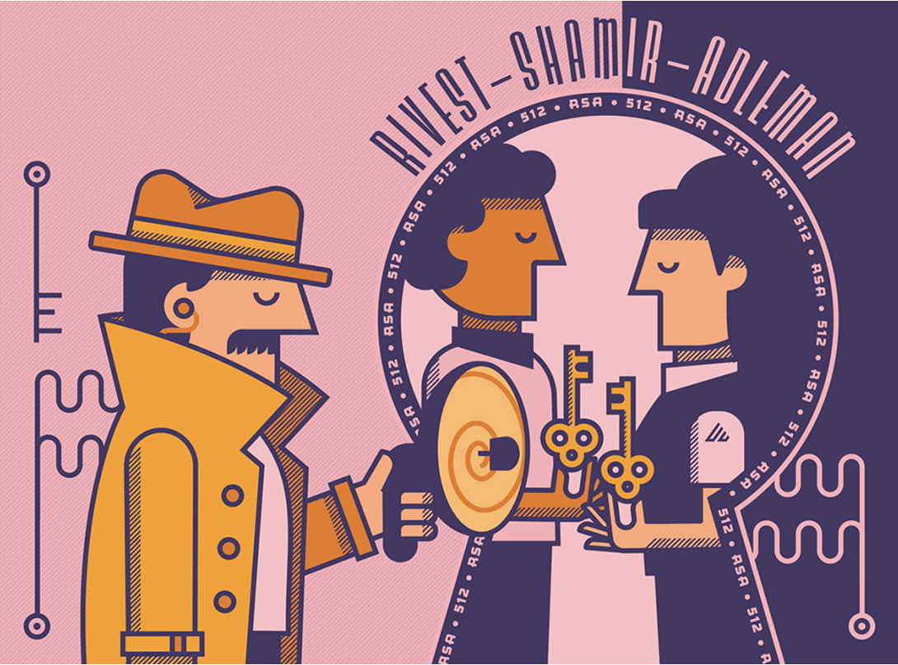
Los involucrados intercambian llaves públicas en un canal inseguro para establecer una llave secreta.
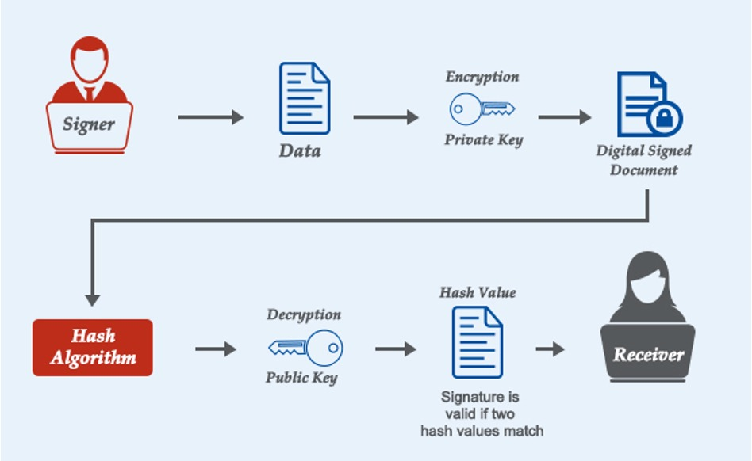
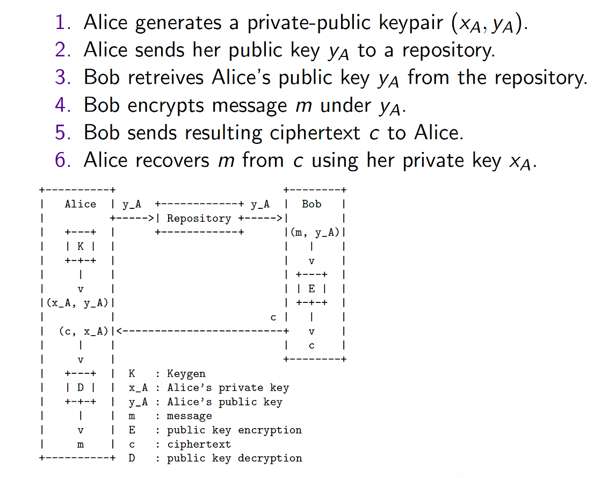
RSA es un algoritmo que no cifra datos directamente, sino que cifra claves simétricas (AES) que luego cifran los datos reales.:
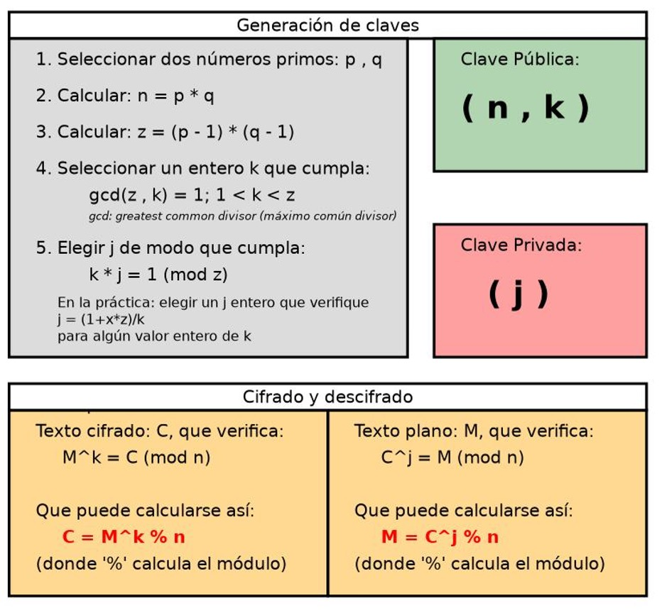
61 × 53 = 3233
p × q = n
Una calculadora lo hace en microsegundos.
3233 = ? × ?
RSA publica n. Oculta p y q. Sin ellos, nadie puede calcular la llave privada.
p=61, q=53
n = 3233
φ = 3120
k = 17
d = 2753
Todo RSA se reduce a exponenciación modular con la llave correcta:
C = Me mod n
Cualquier persona puede cifrar usando la llave pública.
M = Cd mod n
Solo quien tiene d puede descifrar.
El padding es crítico — RSA "textbook" sin padding es inseguro.
Familia de estándares que especifican cómo usar RSA
de forma interoperable. Publicados por RSA Security.
v1.5 (1993): legado, vulnerable.
v2.1 (2002): introduce OAEP y PSS.
Esquema de padding para cifrado RSA. Mezcla el mensaje con bytes aleatorios y una función hash antes de cifrar. El mismo mensaje produce cifrados distintos cada vez — esquema probabilístico y probablemente seguro.
Esquema de padding para firmas RSA. Agrega una sal aleatoria al proceso de firma, produciendo firmas distintas del mismo mensaje. Análogo a OAEP pero para autenticidad, no confidencialidad.
Protocolo de intercambio de claves sobre curvas elípticas. Las claves son efímeras (desechadas por sesión), garantizando PFS. Reemplaza a RSA para key exchange en TLS 1.3.
0x00 0x02 [bytes aleatorios] 0x00 [mensaje]
¿Cómo recupera el atacante el texto plano en ~1 millón de consultas?
C del handshake TLSC' = (se × C) mod n ← transforma C algebraicamente"RSA padding error" → padding inválido
(descarta)"bad record MAC" → padding válido
✓ (info valiosa)
La distinción entre tipos de error actúa como
oráculo: responde preguntas de sí/no sobre M.
OAEP + respuesta de error uniforme e independiente del
tipo de fallo cierra esta puerta.
from Crypto.PublicKey import RSA
from Crypto.Signature import pss
from Crypto.Hash import SHA256
key = RSA.generate(3072)
mensaje = b"Documento a firmar"
h = SHA256.new(mensaje)
firma = pss.new(key).sign(h) # RSA-PSS
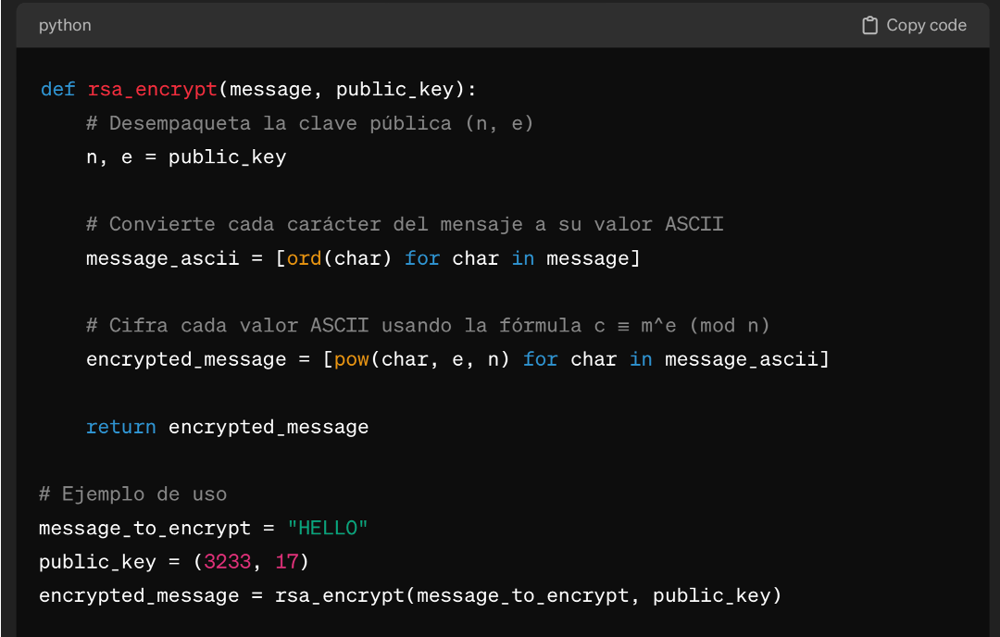
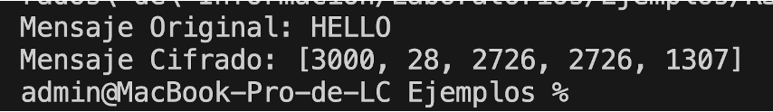
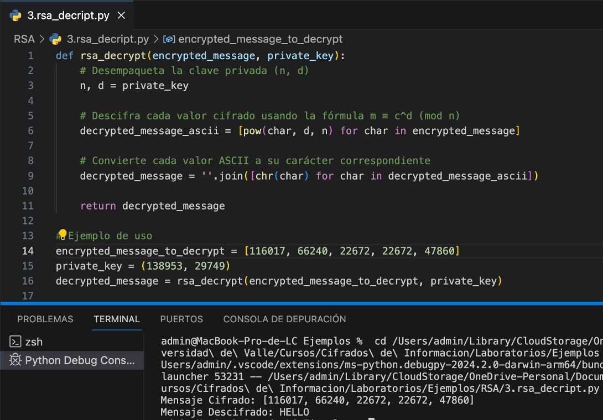
from Crypto.PublicKey import RSA
# Mínimo 2048 bits; recomendado 3072 bits para nuevo software
key = RSA.generate(3072)
private_key = key.export_key() # Guardar cifrada con passphrase
public_key = key.publickey().export_key()
print("Clave privada:\n", private_key.decode())
print("Clave pública:\n", public_key.decode())
from Crypto.PublicKey import RSA
from Crypto.Cipher import PKCS1_OAEP
from Crypto.Hash import SHA256
# Cargar clave pública del destinatario
public_key = RSA.import_key(open("public.pem").read())
# Cifrar con OAEP + SHA-256 (NO usar PKCS1_v1_5 para cifrado)
cipher = PKCS1_OAEP.new(public_key, hashAlgo=SHA256)
mensaje = b"Clave AES a transferir"
cifrado = cipher.encrypt(mensaje)
print("Cifrado:", cifrado.hex())
from Crypto.PublicKey import RSA
from Crypto.Cipher import PKCS1_OAEP
from Crypto.Hash import SHA256
# Cargar clave privada
private_key = RSA.import_key(open("private.pem").read())
# Descifrar (usa la clave privada)
cipher = PKCS1_OAEP.new(private_key, hashAlgo=SHA256)
mensaje = cipher.decrypt(cifrado)
print("Mensaje:", mensaje.decode())
| Tamaño RSA | Bits de Seguridad | Estado (2026) |
|---|---|---|
| 1024 bits | ~80 bits | Inseguro |
| 2048 bits | ~112 bits | Mínimo aceptable |
| 3072 bits | ~128 bits | Recomendado |
| 4096 bits | ~140 bits | Alta seguridad, más lento |
Para software nuevo, considerar Ed25519 o ECDSA-P256 en vez de RSA
En TLS 1.2 y anterior: RSA se usaba tanto para certificados como para intercambio de claves — sin PFS.
TLS 1.3 (RFC 8446): RSA solo autentica el certificado del servidor. El intercambio de claves es exclusivamente ECDHE o DHE — con PFS.
os.urandom(32)RSA opera solo sobre 32 bytes (la clave AES). AES opera sobre los datos reales. Lo mejor de ambos mundos.
Patrón real de uso:
import os
from Crypto.Cipher import AES, PKCS1_OAEP
from Crypto.PublicKey import RSA
from Crypto.Hash import SHA256
# 1. Generar clave AES de sesión
clave_aes = os.urandom(32) # AES-256
# 2. Cifrar datos con AES (rápido)
cipher_aes = AES.new(clave_aes, AES.MODE_GCM)
datos_cifrados, tag = cipher_aes.encrypt_and_digest(b"Datos confidenciales grandes...")
# 3. Cifrar la clave AES con RSA-OAEP (lento, pero solo 32 bytes)
public_key = RSA.import_key(open("recipient_public.pem").read())
cipher_rsa = PKCS1_OAEP.new(public_key, hashAlgo=SHA256)
clave_cifrada = cipher_rsa.encrypt(clave_aes)
# Transmitir: clave_cifrada + cipher_aes.nonce + tag + datos_cifrados
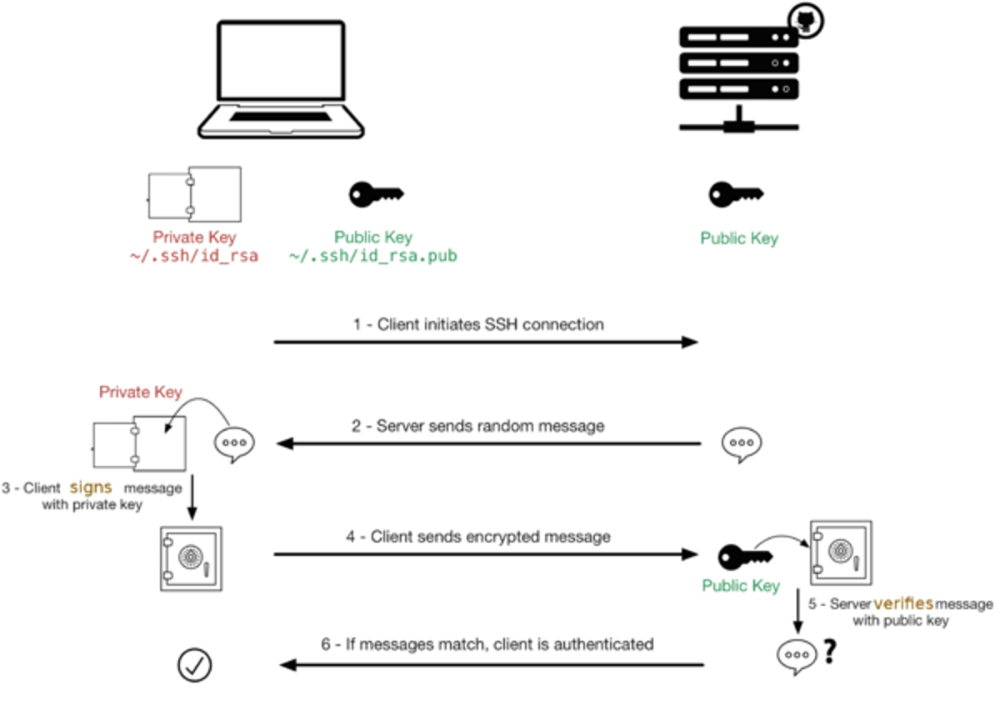
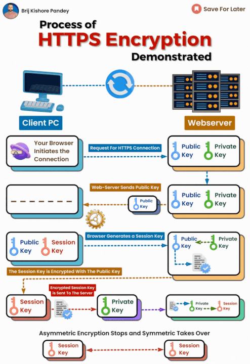
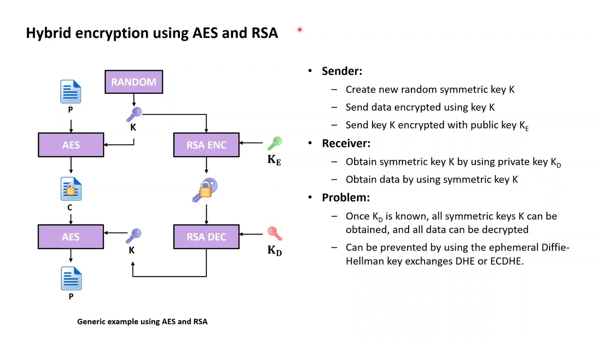